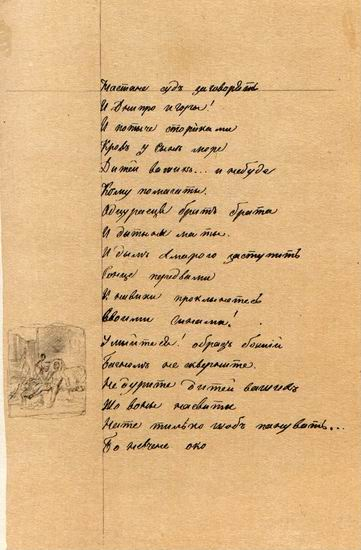
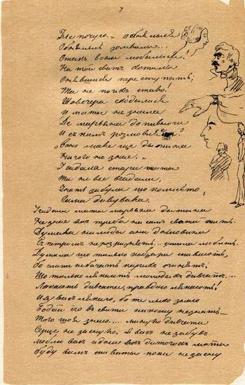

Літературна: 240 поезій з них — понад 20 поем, драма «Назар Стодоля», 20 повістей (до нас дійшли 9); щоденники; автобіографії, фрагменти двох незакінчених драм. Оригінали більшості творів Шевченка зберігаються в Інституті літератури НАН України. Твори Шевченка перекладені приблизно 100 мовами світу.
Мистецька: Шевченко-художник. 210 акварелей, передусім пейзажів; 150 портретів, з яких 43 — автопортрети; 27 офортів, з яких 6 — серії «Живописна Україна»; понад 230 олівцевих рисунків ландшафтів України; ескізи, етюди, начерки — на 360 сторінках рукописів та альбомів.
Свої вірші Тарас Шевченко почав писати ще кріпаком у Літньому саду білими петербурзькими ночами й творив мовою, яка не мала на той час навіть унормованої абетки. Його романтична поезія піднесла українську літературу й відразу стала для українського читача таким же взірцем романтичної традиції, як вірші В. Жуковського, А. Міцкевича, Д. Байрона чи романи В. Скотта. З найперших поезій збереглася лише балада «Причинна».
Навчаючись у Петербурзькій академії мистецтв у великого Карла Брюллова, чиє ім’я було тоді відоме всій Європі, Шевченко стає улюбленим учнем художника. Та чим більше він відчував себе художником, тим сильнішою ставала внутрішня потреба творити поезію.
У 1838-1839 рр. написано «Думку» («Нащо мені чорні брови...»), «Тарасову ніч», «Катерину», «Перебендю», «Тополю», «До Основ’яненка» та «Івана Підкову», що увійшли до «Кобзаря» 1840 року – авторської збірки, що її назва стала пізніше назвою всіх видань Шевченка-поета і навіть його другим – поетичним іменем.
У поезіях 1843-1845 років, написаних під враженням мандрівок Україною (в літературі відомі як період «трьох літ»), помітний об’єктивніший, критичніший погляд поета на тогочасну дійсність. Після першої подорожі з’являться «Розрита могила», «Чигрине, Чигрине…», «Сон» та інші твори.
НАЧЕРКИ НА СТОРІНКАХ РУКОПИСНОЇ ЗБІРКИ «ТРИ ЛІТА». Олівець. [Кінець 1845 -початок 1847].
Отримавши звання вільного художника у 1845 році, Шевченко знову приїздить в Україну. Як художник співпрацює у Києві із Тимчасовою комісією для розгляду давніх актів, багато подорожує, змальовує пам’ятки архітектури, культури, мальовничі куточки тощо. Поетичний цикл «трьох літ» продовжиться творами «Єретик», «Великий льох», «Кавказ», «І мертвим, і живим…», «Давидові псалми», «Як умру, то поховайте…» та ін. Поет записує ці твори до рукописної збірки «Три літа», яку потім під час арешту 1847 року знайдуть при ньому, і яка стане головною причиною того нелюдського «под строжайший надзор с запрещением писать и рисовать». На декілька десятиліть збірка «Три літа» потрапляє до архіву «Третьего отделения собственной его императорского величества канцелярии», а її автор – на десять довгих років заслання.
Поезії, написані на засланні, становлять новий етап творчого розвитку Шевченка. Наявна вже в період “трьох літ” творча еволюція Шевченка до простоти й природності поетичного образу, до поглибленого психологізму повно й яскраво виявилась у його поезіях цих років. Вражає й інтенсивність творчого процесу Шевченка. Поет написав понад сто творів, серед яких дев’ять поем. До того ж з десяти років заслання на активну поетичну діяльність припадають тільки перші три.
НАЧЕРКИ НА ПОЛЯХ РУКОПИСУ ПОЕМИ «МАР'ЯНА-ЧЕРНИЦЯ». Чорнило. [Н. п. 22.ХІ 1841].
На відміну від періоду “трьох літ”, Шевченко тепер майже не пише відверто політичних творів. Тепер уже явно домінують християнські ідеї любові. В цей час у листі до графині А.Толстої поет зізнається: «Господь відвів від моїх очей призму, через яку я дивився на людей і самого себе. Він навчив мене як любити ворогів і тих, що нас ненавидять. А цього не навчить ніяка школа, крім тяжкої школи випробувань та чисельних довгих бесід із самим собою».
У Новопетровському укріпленні Шевченко не напише жодного поетичного рядка, проте в цей час він звертається до прози. Протягом 1852-1857 рр. він створив близько 20 повістей російською мовою, з яких до нас дійшло лише 9: «Наймичка», «Варнак», «Княгиня», «Музикант», «Несчастный», «Капитанша», «Близнецы», «Художник», «Прогулка с удовольствием и не без морали». Ці твори розкривають чимало сторінок життєвого шляху їх автора – дитинство, навчання в Академії мистецтв, поїздки по Україні, роки заслання.
В останні роки Шевченко писав значно менше, ніж у період „трьох літ” чи в Орській фортеці на Кос-Аралі – давалися взнаки вимушене семирічне мовчання, підірване здоров’я, особисті негаразди. В 1857 р. було написано лише дві поеми – «Юродивий», «Неофіти», 1858 р. – п’ять невеликих віршів: серед яких афористичний триптих «Доля», «Муза», «Слава»; 1859 р. – одинадцять віршів і одну поему; 1859р. – тридцять п’ять поезій; в 1861 р. – одну. Але це був час найвищого піднесення його генія, час узагальнень попередніх духовних пошуків.